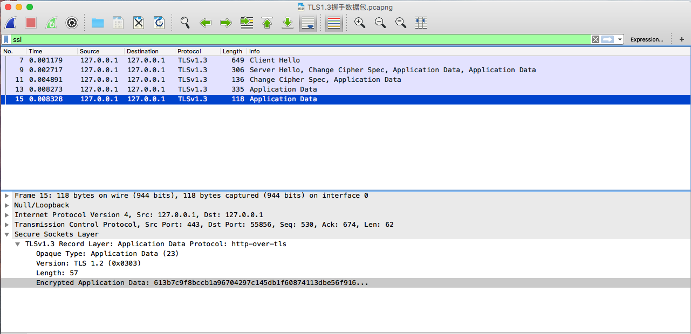
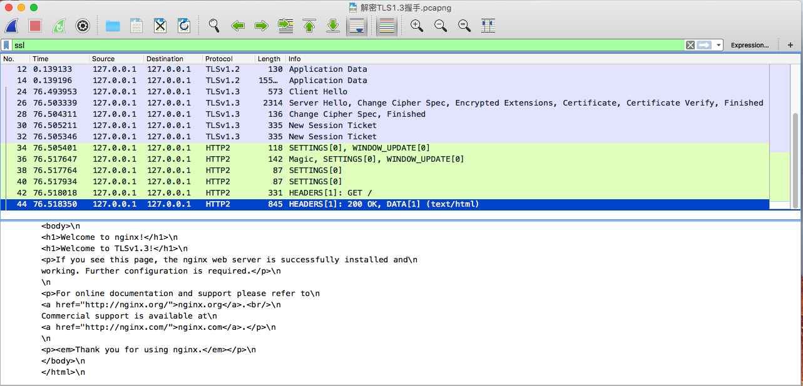

Wireshark解密 TLS 1.3 数据包
Wireshark -> Preferences -> Protocols -> ssl
配置 RSA keys list: Server 私钥
配置 SSL debug file /path/to/ssl.log, Wireshark 日志文件
配置 Pre-Master-Secret log filename /path/to/sslkeylog.log, 浏览器密钥保存文件
配置环境变量 echo "\nexport SSLKEYLOGFILE=~/Documents/me/tls/sslkeylog.log" >> ~/.bash_prefile
source .bash_prefile
命令行启动 Chrome open /Applications/Google\ Chrome.app/, 保证 Chrome 能读取到 SSLKEYLOGFILE
解密数据包前

解密数据包后
